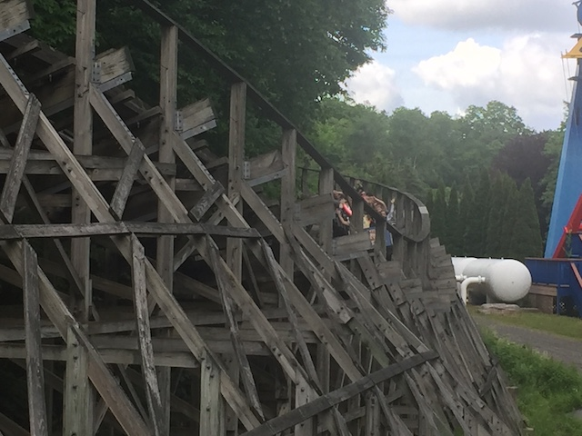
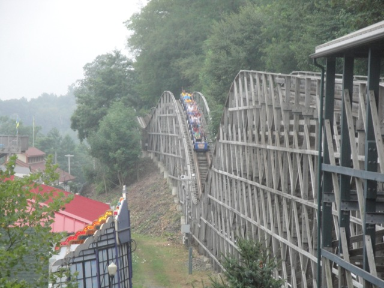

| |
Boulderdash Review

We're here at Lake Compounce, where today, we'll be reviewing one of the best coasters in America. Boulderdash. Yes, it may not look like anything special, but this ride is up there with coasters such as El Toro and Outlaw Run. It's THAT good. But what's so good about a ride that you can barely even see. It's not huge like El Toro and it doesn't have any inversions like Outlaw Run, but man does this ride haul. So enough chit chat, and let's get on the ride. We pull down our lap bars, buckle the seat belts, and we're off. We roll around a curve and head straight up the lifthill. Now already, I love Boulderdash, it's got perhaps one of the coolest lift hills ever. It's just embedded in the woods and you never see how high you're going. All you know is that you're heading deeper and deeper into the woods. It feels more like you're about to go cliff jumping than it does you're riding a roller coaster. It seriously looks like Hermit Falls (before the doucebags ruined it for everyone). Finally, when you do reach the top of the lifthill, it doesn't seem like you're high up at all. You're just coasting at ground level, just chilling around a turn, heading straight for the edge. Wait what? Yep, we're about to roll down the mountain with a nice curved drop. Wee!! Not only does this drop give us quite a lot of speed, but we also get some nice laterals too, and at the bottom of the drop, we just keep turning as we race at ground level through the trees, blurring past us at what feels like a million miles per hour. We rush out of that curve, head up a small hill, get ejected out of our seats and FLY past the station before heading back deeper into the trees. We just rise up, turn a little, and then head down a small drop. And all throughout, we still have our original speed. We're just FLYING through this forest. After that small drop, we head around another turn back into the mountain and just fly up another gradual hill. And this is where it starts to get better. We head around another turn, gaining serious laterals, but then we dip. But wait, yes, it's a double dip! BOOM!!! EJECTION!!! And we rise up into another hill with some real serious airtime. And again, being surrounded by all the trees just makes the ride even better and feel ever faster. We go around another turn, another SLAM from the harsh laterals, there's a little straight track, but for those not paying attention or caring, it's like you just blinked. We rise up another small hill, get more airtime, roar through some straight, ok it's not straight. It's slightly curved so you get more laterals track. We then rise into a double up before heading around a nice tight turn in the mountain side. Now if you thought the other laterals were strong, these will BLOW your mind. These laterals are so strong that they actually crush your ribs if you aren't prepared, so some of the more sensitive enthusiasts may not like this part of Boulderdash, but I personally LOVE IT!!! It's big, it's fast, and it's INTENSE!!! Let the beast ROAR!!! And these laterals just keep going and going and going until YOINK!!! Airtime from a bunny hop, and this one is STRONG!!! I'd describe just how strong, but before I would be able to, we rise up from our seats and after heading up the hill, head straight for a TRIPLE down. Yes, a triple down. Don't even try and fight the airtime. Your ass is coming out of that seat, and your thighs are probably gonna smack your lap bar. And if the triple down didn't do the job, then the double up will right before dropping you back down again. We rise up through another bunny hop, and it's got strong airtime, but not quite as strong as the triple down, and we rise up another hill, and get one last pop of sweet airtime before hitting the brake run. And yeah. That is just absolutely INSANE!!! The rib smashing laterals and the crazy ejector air, combinded with the amazing setting of just being woven in and out of the trees to really enhance the sensation of speed, and this coaster shoots up to being one of the best ever. And don't even get me started on riding it at night. Just....WOW!!! You have to check out Boulderdash if you're in Conneticuit.
10/10
Location: Lake Compounce
Opened: 2000
Built by: Custom Coasters
Last Ridden: June 12, 2021
Boulderdash Photos






Home
|